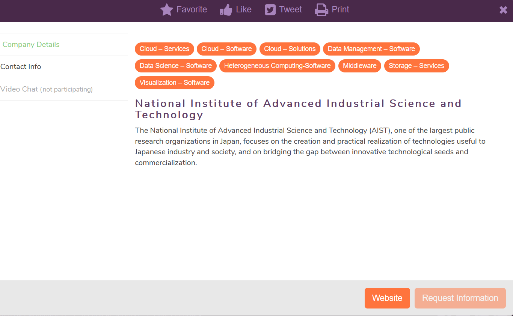
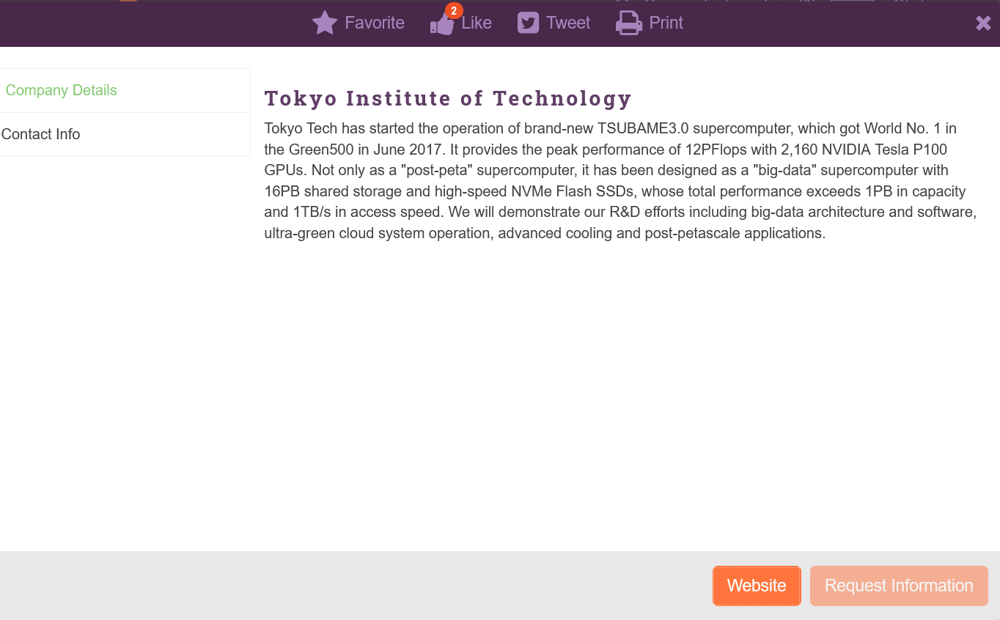

AIST started operation of ABCI, which is a publicly available cloud infrastructure for AI research and development, from August 2018, and RWBC-OIL uses ABCI for AI research. RWBC-OIL researchers from AIST and TokyoTech attend SC20 to provide presentations and booth exhibition about ABCI and AI/BigData research projects.
SC20 Virtual Booth Exhibition
Highlights at SC20 is presentations of RWBC-OIL research activities that use ABCI and TSUBAME3.0. This year, a research paper from AIST and TokyoTech is presented. There are also many talks from RWBC-OIL researchers at BoF, panels, workshop and exhibition booths.
Virtual Booth Map
AIST booth: https://www.eventscribe.com/2020/SC20/preview.asp?boothTarget=412596

Tokyo-Tech booth: https://www.eventscribe.net/2020/SC20/preview.asp?boothTarget=412822

Presentations @ Conference
Technical Paper
Scaling Distributed Deep Learning Workloads beyond the Memory Capacity with KARMA
Mohamed Wahib, Haoyu Zhang, Truong Thao Nguyen, Aleksandr Drozd, Jens Domke, Lingqi Zhang, Ryousei Takano, Satoshi Matsuoka
Date (EDT): Tuesday, 17 November 2020, 1:00pm - 1:30pm
Location: Track 4
Awards and Rankings
TOP500 Supercomputers
Date (EDT): Monday, 16 November 2020, 4pm - 5:30pm
Location: Track 1